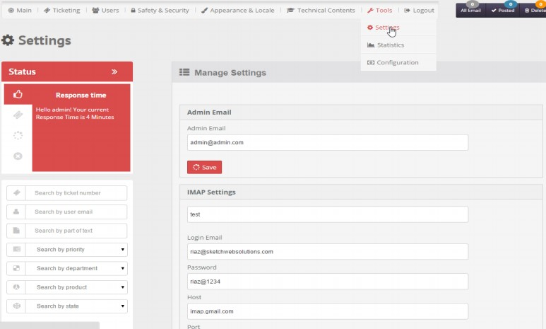
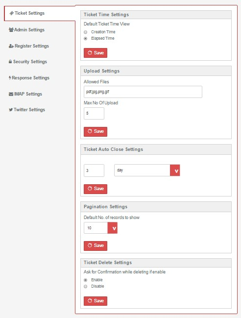
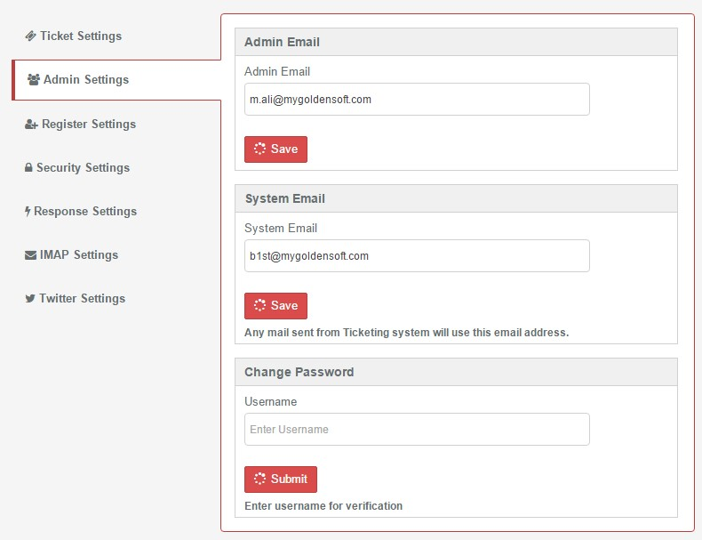
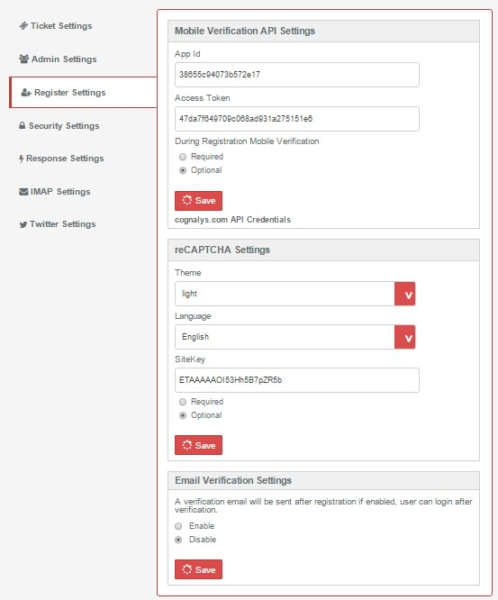
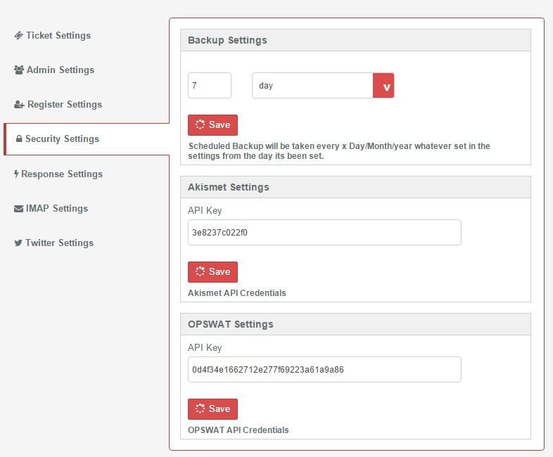
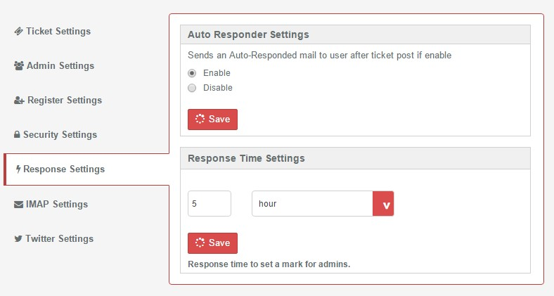
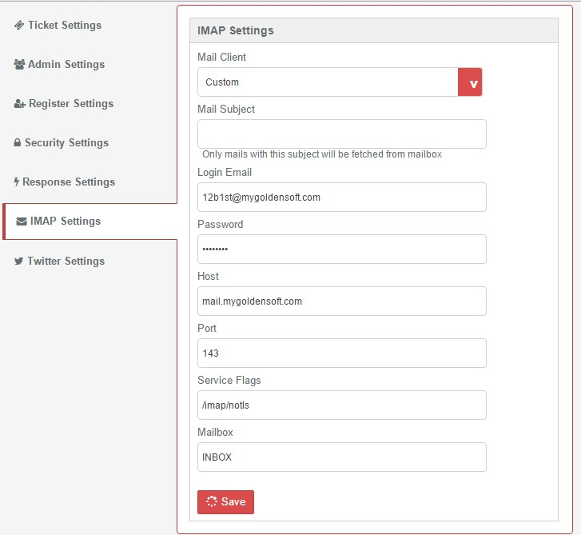
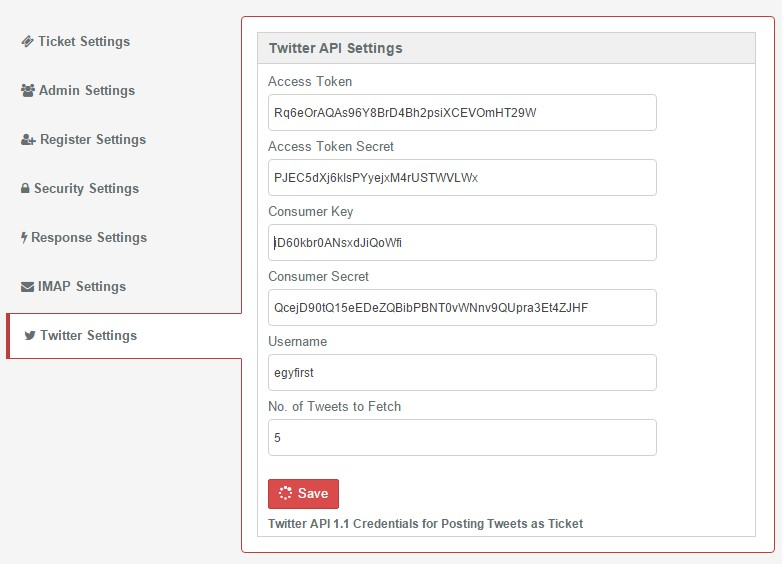

- Select Settings from Tools top menu. Manage Settings window will open with existing Settings list Vertical tabs)

- Admin Email: which email account will receive emails as tickets.
- IMAP Settings: settings from email provider that allows this email account to receive emails via IMAP.
- Upload Settings: set which type of files user will be able to upload (multiple uploads via frontend & backend)and setting maximum number of uploads at one shot.
- Mobile Verification API Settings: uses cognalys.com API to verify a mobile number. Two text boxes to enter app id and access token. During registration mobile verification may be required or be optional.
- There are three states of any mobile number:
- Not Correct: this means no one can make a call to this number.
- Correct: this means we can call this mobile number, but we need to verify that the user own it, since it may be someone else mobile number.
- Verified: this means we can call the user who own this mobile number.
- reCAPTCHA Settings: allows reCAPTCHA in fronend and to define color of reCAPTHA.
- Ticket Auto Close Settings: duration for a ticket to close automatically no matter what is its status.
- Backup Settings: scheduled database backup based on setting option.
- Page Settings: default No. of records to show per page.
- Ticket Time Settings: - time for posted ticket can be displayed in two different styles
- as elapsed time since it was posted
- as time of posting
- Ticket Delete Settings any deletion can be confirmed first of deleted immediately without any warning.
- AkisMet Settings: enter your AkisMet API
- OPSWAT Settings: enter your OPSWAT credentials.
- Auto Responder Settings: Sends an Auto-Responded email to user after a ticket is posted if enabled.
- Response Time Settings: Sends an Auto-Responded mail to user after ticket post if enable
- Twitter API Settings: enter your twitter application credential to allow receiving tweets and posting any of them as tickets.







Created with the Personal Edition of HelpNDoc: Full-featured EPub generator